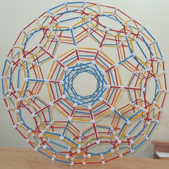
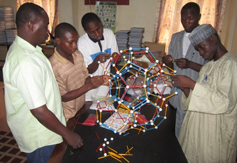
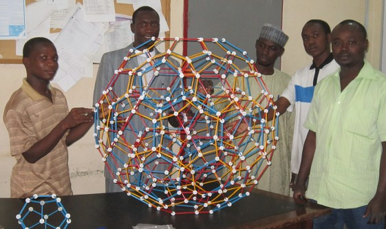
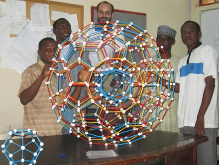

|  | Zometool 120-cell at UDU SokotoFrank Sottile, Monday 2 July 2012In a follow-up activity to a lecture on "Platonic solids in the next dimension", several students from Usmanu Danfodiyo University in Sokoto, Nigeria, met in the H.O.D.'s office to build a projection of the 120-cell in R3 on his desk. This activity was assisted by Dr. Moussa Seydou of IUT de Maradi in Niger and Muftahu Zubairu Ringim, a lecturer at the University of Kano in Nigeria. The model remains there, for at more than 1 metre in diameter it is too big to fit out the door. Everyone had fun making it, and now the Maths department at UDOS has a beautiful work of mathematical art to admire. Special thanks to the three students who made the construction: S.U. Wasagu, A.A. Saleh, and U.F. Shu'aibu (wearing a cap). |
|
 Seydou, Wasagu, Saleh, Ringim, Shu'aibu. |
 Wasagu, Ringim, Shu'aibu, Saleh, Seydou. |
 Wasagu, Ringim, Sottile, Shu'aibu, Saleh. |